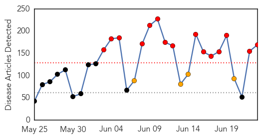
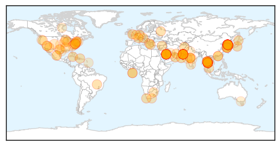
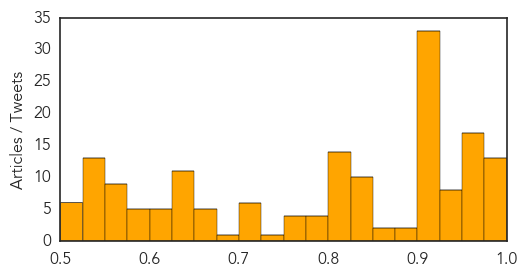
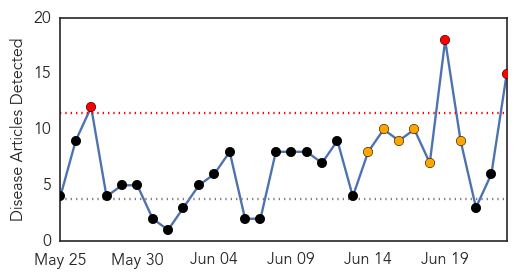

Unknown
30-Day Web Trend
15 alerts, 4 warnings

30-Day Twitter Trend
7 alerts, 1 warnings

Article Locations
Article Confidences
Top Articles:
- 0.998
- AZ Dept. of Health Services Director's Blog
- 0.997
- Thailand says 175 exposed to MERS patient; South Korea reports no new case - World
- 0.997
- MERS virus death toll rises to '471 since 2012': WHO
- 0.997
- The World On Arirang
- 0.997
- S. Korea reports two more MERS deaths
- 0.996
- 2 Deaths, Thailand No New Case Of The Deadly Disease
- 0.995
- South Korea MERS death toll reaches 27 - Regional
- 0.994
- S. Korea's MERS infections rise to 175 with 3 more cases - Xinhua
- 0.984
- No MERS outbreak in Oman: health ministryHealthcare
- 0.984
- The World On Arirang
- 0.982
- Thailand makes MERS test mandatory for patients before entry
- 0.980
- MERS outbreak: South Korea reports three more new cases
- 0.979
- Incurable 'pig plague' African Swine Fever could DECIMATE UK pork industry claim farmers
- 0.973
- Pregnant MERS patient recovers, safely gives birth
- 0.971
- 3 More Cases Reported, Samsung Heir Apologizes On Behalf Of Hospital
- 0.967
- Pattaya News, Communities, Opinions and much more...
- 0.967
- U.S. MERS experts visit S. Korea for technical cooperation
- 0.965
- Thai hospitals rapped over improper care of MERS patients
- 0.963
- Samsung scion apologizes for MERS spread at group hospital
- 0.963
- S Korean Samsung scion apologises for MERS spread at group's hospital
- 0.962
- 27 fatalities confirmed in MERS outbreak
- 0.961
- FPO says MERS situation in Thailand is under control
- 0.960
- UPDATE 3-Samsung scion apologises for MERS spread at group hospital
- 0.960
- UPDATE 3-Samsung scion apologises for MERS spread at group hospital
- 0.959
- Thailand still faces risk of MERS
- 0.958
- Samsung’s ‘crown prince’ says sorry over MERS outbreak
- 0.958
- Outbreak: Suspected Congo virus carrier shifted to isolation ward
- 0.957
- Thailand able to contain deadly virus - Regional
- 0.954
- Hospital sorry for spread of MERS - World News
- 0.954
- Medical tourism expertise helps Thailand cope with MERS
- 0.950
- Samsung Group scion bows in apology for Mers outbreak
- 0.950
- Thai tourism copes with MERS
- 0.938
- South Korea reports three more MERS cases
- 0.937
- Samsung heir apologizes over MERS in S Korea
- 0.935
- domain-b.com : Samsung chief apologises for MERS failings at group hospital
- 0.934
- Samsung’s ‘crown prince’ says sorry over MERS outbreak
- 0.927
- Samsung Heir Apologizes For MERS Spread At Samsung Hospital
- 0.926
- Samsung Group scion bows in apology for MERS outbreak
- 0.921
- MERS super-spreader is discharged from hospital-INSIDE Korea JoongAng Daily
- 0.917
- Chicago Tribune
- 0.917
- Chicago Tribune
- 0.917
- Chicago Tribune
- 0.917
- Chicago Tribune
- 0.917
- Chicago Tribune
- 0.917
- Chicago Tribune
- 0.917
- Chicago Tribune
- 0.917
- Chicago Tribune
- 0.917
- Chicago Tribune
- 0.917
- Chicago Tribune
- 0.917
- Chicago Tribune
Showing top 50 articles...
Top Tweets:
-
No tweets found for Jun 23, 2015
Dengue Fever
30-Day Web Trend
3 alerts, 6 warnings

30-Day Twitter Trend
1 alerts, 0 warnings

Article Locations

Article Confidences

Top Articles:
- 0.997
- Yemen's health situation 'disastrous', officials say
- 0.984
- Int'l aid delivered to Yemen to cope with health crisis
- 0.973
- WHO: 3,000 cases of dengue fever in Yemen reported since March
- 0.965
- Dengue cases with more complicated symptoms this year, says Health Ministry
- 0.957
- Hard Times: 'Yemen has over 3,000 Dengue cases, figure expected to get higher'
- 0.924
- Orange County officials to talk mosquito safety, prevention
- 0.922
- Farsnews
- 0.919
- More than 3,000 dengue cases in Yemen since March: WHO
- 0.904
- WHO concerned about rise in dengue cases in Yemen
- 0.903
- Health Ministry: Malaysia prepared to face MERS, but Dengue threat remains - Nation
- 0.855
- Experts Warn Of Mosquito Infestation This Summer
- 0.833
- The dreaded Dengue returns and you can’t count on platelets
- 0.764
- 39 killed in south Yemen clashes
- 0.654
- MOH intensifies Fogging Campaign against Mosquito-Borne Virus
- 0.618
- Country faces largest dengue epidemic ever
Top Tweets:
-
No tweets found for Jun 23, 2015